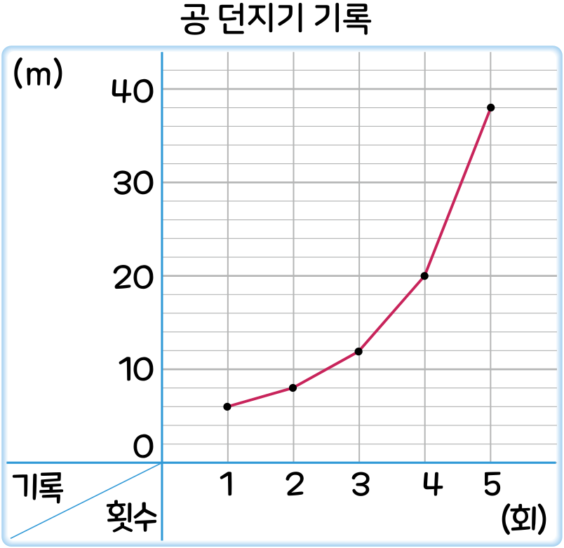

5. 자료와 꺾은선그래프
공부를 잘했나요
수학
125~127
쪽
수학 익힘
89
쪽
[
~
]
우주의 공 던지기 기록을 조사하여 나타낸 꺾은선그래프입니다. 물음에 답해 보세요.

㉠
기록이 가장 좋지 않게 나온 때는 1회입니다.
㉡
기록이 점점 좋아지고 있습니다.
㉢
4회보다 5회 때 기록이 38 m 더 좋아졌습니다.
꺾은선그래프를 보고 알 수 있는 내용을 모두 찾아 기호를 써 보세요.
㉠
가장 아래에 찍힌 때는 1회이므로 기록이 가장 좋지 않게 나온 때는 1회입니다.
㉡
꺾은선이 오른쪽 위로 올라가고 있으므로 기록이 점점 좋아지고 있습니다.
㉢
4회: 20 m, 5회: 38 m
38
20
18 (m)이므로 4회보다 5회 때 기록이
18 m 더 좋아졌습니다.
따라서 꺾은선그래프를 보고 알 수 있는 내용을 모두 찾으면 ㉠, ㉡입니다.